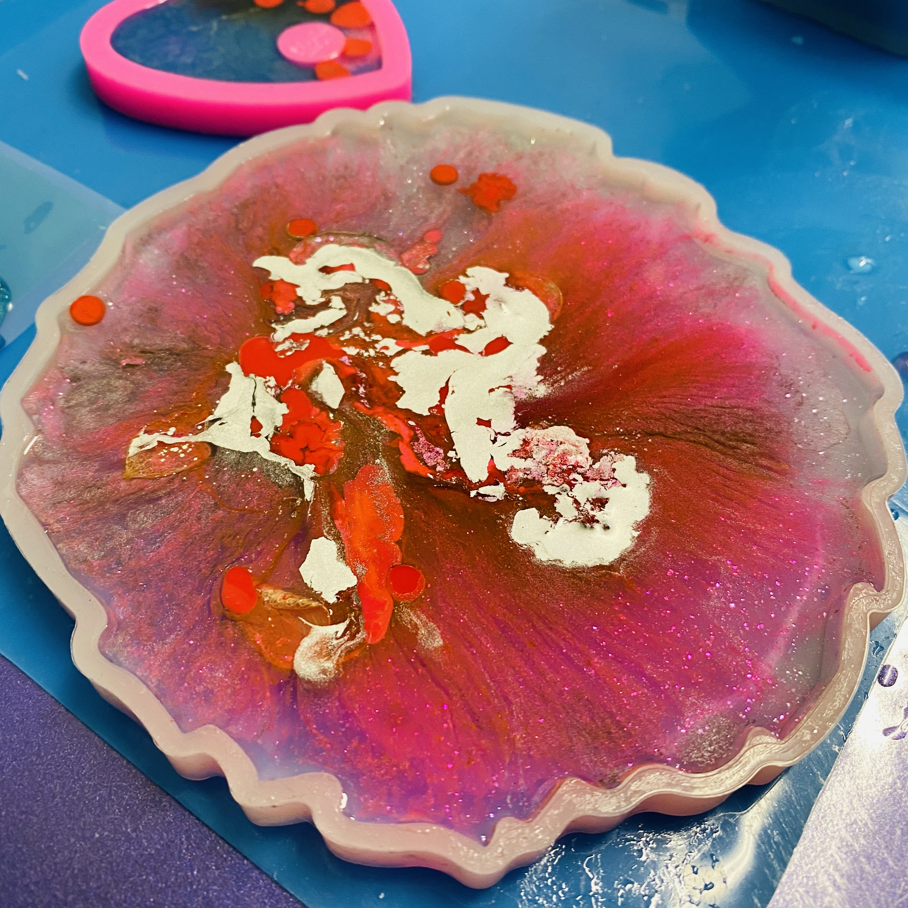

Voordat je begint is het belangrijk om de Nitril handschoenen aan te trekken.
Bedek het oppervlak waar je op gaat werken vervolgens met plastic folie, zodat je de spetters gemakkelijk kan schoonmaken.
Epoxy hecht op veel soorten ondergrond, zo kun je gieten op mdf, multiplex, plastic of hout.
Bekijk dan wat je wil maken, zo kan je ongeveer inschatten hoeveel epoxy je nodig hebt.
Epoxy is namelijk het duurste van alle benodigdheden.
Je mengsel bestaat uit epoxyhars en epoxyverharder. Deze zorgt ervoor dat je werkje goed uithard en niet lopend blijft.
Kijk goed naar de verhouding op de flessen, en meet deze zeer nauwkeurig af.
Meng deze samen in je mengbeker gedurende drie minuten in dezelfde richting, dit om te voorkomen dat er teveel luchtbelletjes ontstaan.
Om het beste resultaat te krijgen giet je deze best nog eens over in een andere beker en herhaal het proces.
Nu je epoxy goed is gemend, giet je deze over in verschillende kleine bekers.
De hoeveelheid per beker is afhankelijk van het aantal kleuren dat je wilt gebruiken en de hoeveelheid van een kleur die je wilt gebruiken.
Voeg pigment toe aan je bekers, je kan deze ook met elkaar combineren, gliters toevoegen of je epoxy helder gebruiken.
Als je objecten wil gebruiken zoals figuurtjes bijvoegen of gedroogde bloemen kan je best is lagen werken,
anders gaan deze naar beneden zakken. Let wel op dat je elke laag eerst een dag laat drogen.
Laat je creativiteit de vrije loop!
Als je de gewenste vormen hebt gegoten kan je het oppervlak licht bewegen om de lege plekken te bedekken en een ‘flow’ effect te creëren.
Zorg er wel voor dat je het kunstwerk weer waterpas terugzet.
Als je tevreden bent over het resultaat van jouw kunstwerk kun je met een gasbrander de luchtbelletjes uit jouw resin art halen. Dit kan direct na het gieten.

Na ongeveer een dag is de epoxy hard genoeg om te demolden.
Als dit wordt gedaan zal opvallen dat de rand niet netjes glad is.
Door de rand voorzichtig te verwarmen met een gasbrander zal de rand netjes glad worden.
Jouw kunstwerk is nu af! :) Let wel, het duurt een aantal dagen voordat het volledig is uitgehard.